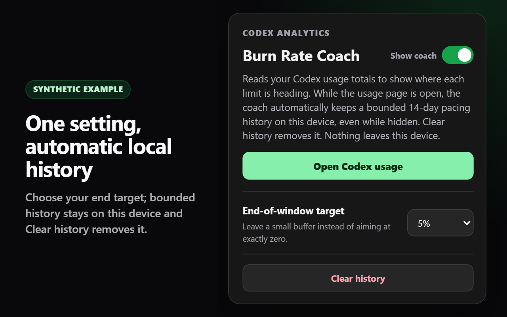

النتيجة أولًا
يعرض كل مقياس بصورة مستقلة الرصيد المقدر عند إعادة التعيين أو وقت الوصول إلى الصفر. ولا تتجاوز بطاقة أخرى.
يضيف Burn Rate Coach نتيجة متوقعة واحدة ومسارًا محليًا موجزًا إلى كل بطاقة استخدام Codex مدعومة.

شاهد الرصيد المتوقع عند إعادة التعيين أو وقت النفاد المبكر المقدر من دون فتح لوحة أخرى.
يعرض كل مقياس بصورة مستقلة الرصيد المقدر عند إعادة التعيين أو وقت الوصول إلى الصفر. ولا تتجاوز بطاقة أخرى.
يحدد الاستخدام المرصود التوقع. والهدف مرجع هادئ لا يُستخدم إلا لتلوين المسار مقابل نطاق ثابت.
اختر هدف نهاية الفترة. السجل المحدود لمدة 14 يومًا تلقائي، ويبقى على الجهاز ويمكن مسحه من النافذة المنبثقة.
تشغّل هذه الصور رمز الإضافة المخصص للإنتاج على نموذج خاص وأمين من حيث البنية. ولا تظهر فيها أي بيانات حساب.



أثناء فتح Codex Analytics، يراقب Burn Rate Coach بصورة سلبية نتيجة الحصة التي فكّت الصفحة ترميزها بنجاح عندما تقرؤها. ولا يصل إلا إلى معرّفات المقياس والفترة الثابتة والنسبة المستخدمة ومدة الفترة وتوقيت إعادة التعيين اللازمة للتوقع. وينشئ وقت الرصد محليًا، ويربط النتائج بالبطاقات الأصلية فقط عبر بيانات التقدم وإعادة التعيين الرقمية المتطابقة، ولا يستخدم أبدًا التسميات المترجمة أو ترتيب البطاقات. تبقى الإعدادات واللقطات التلقائية المحدودة في chrome.storage.local.
لا يبدأ أي طلب شبكة إضافي، ولا ينسخ الاستجابة أو يفك ترميزها بصورة مستقلة، ولا يفحص ملفات تعريف الارتباط أو ترويسات التفويض، ولا يرسل بيانات الحصة، ولا يصل إلى حقول الحساب أو البريد الإلكتروني أو الخطة أو الرصيد أو التحكم في الإنفاق. لا توجد خدمة خلفية أو قياس عن بُعد أو إعلانات أو رمز بعيد أو نظام حسابات لـ Burn Rate Coach.
قراءة سياسة الخصوصيةيتوفر Burn Rate Coach مجانًا على Chrome Web Store.